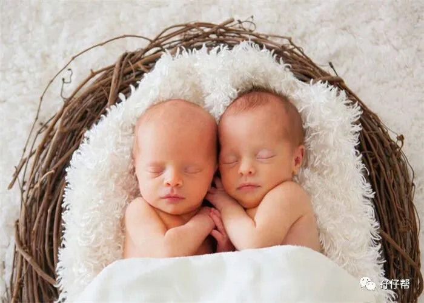
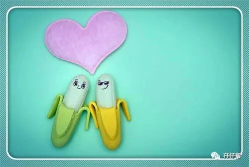

点击上方蓝字 ，与您分享双胞胎育儿经！
文|圆圈妈，一个文思如尿崩的双胎妈妈
01
有一个很有意思的现象，孖仔帮孕期群和爸爸群都喜欢讨论双胞胎宝宝的性别，各种招式千奇百怪，层出不穷。
我真后悔没有早点认识那么机智的你们，那些绝招啊，真的让我脑洞大开。
其实，如果育儿群不讨论胎儿性别，那还算是个交流群吗？如果你们不好奇，我才很好奇你们是不是真的双胞胎准爸爸准妈妈。
据悉，69%以上的准爸妈都想提前知道孩子性别，其中77.8%的人是“出于好奇”。
可是我们国家明令医院禁止非医学需要的胎儿性别鉴定，这让很多准爸妈表示扫兴极了。
孖仔帮孕期群里有部分在国外的宝妈，早早就确认了两宝宝性别，美滋滋地备注在群昵称上，羡煞了一群人。
而有些宝妈好奇心过重也通过各种渠道，如八卦算字，香港验血，熟人B超等方式获取到胎儿性别。
其实哪用那么麻烦呢？来点小把戏，掌握一些套路，与B超医生斗智斗勇，还是可以得到些小提示的。
先分享下我做四维大排畸时套出双胞胎宝宝性别的经历。
“医生，我这胎有可能是龙凤胎吗？”我明知故问。
“单绒双羊，只可能同性别。”
“啊！？哎，那怎么办，要是两个女宝就惨了，我还得再生一胎。”
“都什么年代了？生男生女都一样。”
“我老公家是潮汕的，很重男轻女，必须生出儿子为止！”
两个美女护士齐刷刷地盯着圆圈爸看，圆圈爸真是愣头青，一点都不配合，还连忙撇清关系。
“不关我的事，我无所谓的，只要宝宝健康就行！”
这招不行，下一招…
“医生，我的两个宝在里面过的好吗？听说我这种情况很容易TTTS，他们有没有症状啊？”
“TTTS 不常见，不要自己吓自己，目前有一个大点，有一个稍微小点。”
“是哥哥大一点还是弟弟小一点啊？”
“我不知道哪个哥，哪个弟，反正你这两个宝宝谁先出来谁就是哥！现在相差不是很大，不用太紧张。只要是不超过20%，双胎一大一小是正常的。”
“谁先出来谁是哥？医生，我能理解为里面两个是男宝吗”
“随便你，我反正没说过。”
以上经历摘自孖仔帮前几期推文《看我如何巧妙套出双胞胎宝宝的性别！B超医生都认怂了》，如需看详情部分，关注孖仔帮，对话框回复字“707”，即可阅读。
02
今天再来分享其他准妈妈套出胎儿性别的那些小聪明。
以下的经验分享来自于众多机智的准爸妈，现在整理了下，分享给想知道两宝宝性别又懒得去查，可是又贼心不死的你！
☛“（四维时）我觉得老二是个男孩，就委婉地问医生是男孩女孩，她问了我门口那是你儿子？我回答说是。她连着说了两遍：你大儿子上的中班还是大班？顿时我就明白了肚子里是个儿子。”
☛“怀老二的时候，带着大宝一起去医院做的四维彩超，当时儿子就说了：妈妈肚子里肯定是个妹妹！医生说，你怎么知道是个妹妹的？大宝说，因为毕竟喜欢妹妹！医生说了句，以后要照顾好妹妹，不能欺负妹妹！”
☛“我问医生买房子来得及吗？”医生说，不一定哦，多准备点房子吧，万一用得到呢…知道双胞胎儿子出生，我才彻底明白！”
☛“做B超的时候，我故意问医生我姑娘是不是小眼睛，不好看，医生一笑说：不会的，和你一样，妈妈这么美，她会丑到哪里去。相比医生也是知道我故意套他的话，但还是很温和地回答了我，后来我就有了一个非常贴心的小棉袄。”
☛“我怀的是双胞胎，听说做四维要做很久，要配合好医生，所以我大气不敢出，更不敢说话，全程都是医生让干嘛就干嘛，庆幸四维很顺利，30分钟不到就搞定了，我准备出去的时候，医生跟我说：谢谢你的配合，希望两宝宝长大后也能像你这样文静不聒噪。我一脸懵逼，结果生出一对姐妹花，才恍然大悟。”
☛“做完B超后，我开始跟医生套近乎，越聊越投机，然后倒苦水，说双胞胎衣服好难准备，不知道性别，全部按中性的买。医生可能知道我那点小心机，回了句：挺好的，中性衣服，两宝宝都可以穿。真神，我这一对真是龙凤胎。男女都可以穿，意味着一男一女。”
☛“医生，我这双胎好难数胎动啊，都不知道谁在动，有时候，左边那个使劲踢，右边那个懒虫一只，医生笑了笑回答我，左边那个大胳膊大腿子的当然踢得狠，右边的那位自然不能比，安静乖巧是TA的本性嘛！我心里暗喜，这也太明显了吧。一动一静，一男一女，生出来果然是龙凤胎。”
☛“我的是二胎双胞胎，大宝是女儿，我非常希望这胎是儿子，圆我老公的儿子梦，做B超的时候很悲伤地叹气：大女儿叫我一定要生弟弟，真是无语，养两个弟弟成本可高了。没想到医生接话了：嗯，确实要努力赚钱才行，两套房是必须的。哈哈，这是在暗示我早点准备婚房给两儿子娶媳妇吗！”
03
还有很多套路就不一一列举了，主要是看机智的你如何超常发挥，基本上这些套路都围绕以下3个关键要诀：
套路一：诉苦打苦情牌，暗示婆婆or妈妈重男轻女，生娃很痛苦，生了一胎又一胎…以此引起医生的感情共鸣…
套路二：套近乎打亲情牌，说医生真辛苦，养娃成本高…以此打开医生的话匣子…
套路三：若是二胎家庭，让童言无忌的大宝直接跟医生要弟弟or妹妹，面对天真无邪的小屁孩，大多数医生都招架不住。
不过让大宝一起耍小心机，真的好吗？
具体的实际操作，自己脑补哈！
另外，以上套路有一个大前提，看运气。
众所周知，大多数B超医生都不大会搭理你，更不会跟你闲聊那么多，除非胎儿真出现问题才会跟你交代些事情。
再说医生的智商那么高，怎么会不知道你在套他呢？
当然，毕竟医生也是有血有肉的人，不排除有些医生坚守岗位职责的同时依然有爱心爆满的一面，看到两胎宝宝蠢萌的动作，忍不住给点小暗示。
因此，使用这些套路的时候，请根据实际情况，万不可生搬硬套，不然会很尴尬，甚至可能会被医生反攻，那就真的挖地洞钻都来不及了。
你问我，圆圈妈，难道你真的不想知道里面那两只是男还是女。
讲真，不好奇是假的，尤其那肚子里面可是个双蛋黄！
当知道是同卵双胎，单绒双羊的妊娠性质，有点拨凉拨凉的，我的龙凤胎梦碎了一地！
但也很坦然地接受同性别的TA们，双男or 双女？
做四维彩超时，看到B超医生非常亲切，也很健谈，可能是怕我太紧张影响到检查进度，聊着聊着就扯开话题，然后就听出点玄机，最后就对号入座了。
其实心里也是或多或少的有几分把握，里面两个就是男孩。
Anyway，这都是马后炮了。就当是无聊孕期中一段怡情的小插曲，乐一乐，笑一笑就行了，仅此而已。
总之，生男生女，天注定，与其提早道破天机，不如等着开盖有惊喜吧！
04
题外话：
最近孕期群接连不断地报喜，看着你们一个个顺利毕业进入喂养群，真替你们高兴哦。
还在孕期煎熬的双胎准妈妈，也不必太羡慕妒忌恨哈，马上会轮到你的。加油ヾ(◍°∇°◍)ﾉﾞ吧！
预祝所有双胎准妈妈足月分娩，母婴同室。
孖仔帮有双胞胎爸爸群啦！
在此你们可以互相交流下初为人父的喜悦和已为人父的辛酸，还有你们男人间的家长里短…尽情唠嗑吧！
入群方式：＋圆圈妈的微信(sgguy-com)，我会发群聊邀请给你们。欢迎准爸爸的加入双胞胎育儿大家庭，一起分享双胞胎育儿经。
#重磅互动#
评论区聊一聊
你希望圆圈妈写什么干货？
随便提，万一下篇就写了呢？
END
本文系圆圈妈sgguy-com原创，来源于孖仔帮，专注双胞胎孕期育儿经验分享，著作权归孖仔帮所有。
212:原来双胎妈妈可以这样数胎动，好简单啊
215:双胎子宫日记系列|（下）你看不看？双胞胎妈妈直播剖腹产全过程
302:喂养干货||如何训练双胞胎宝宝睡整夜觉
306: 真人示范！双胞胎妈妈高难度喂母乳技巧
219双胞胎准爸爸的生存指南：不做猪一样的队友，活着出来喜当爹
220双胞胎准妈妈，其实你的产检方式一直搞错了…
222:看过这份最简单的双胞胎宝宝用品囤货清单，其他的都是将就
712：双十一囤货：我为什么不买并排式的双胞胎婴儿车，这篇文章有答案
304:家有双胞胎宝宝，这6个小贴士越早知道越好
305:双胞胎宝宝怎么睡？这样做既省钱又安全
303:干货||配方奶喂养的双胞胎宝宝囤货用品清单
309: 如何顺利度过双胞胎宝宝的第一年
710:双胎妈妈囤货建议||这6个育儿神器，吃土也要买
我猜你肯定喜欢看上面的文章，对不对嘛？关注孖仔帮，回复文章前面的数字编号即可阅读。
关于这个号
谢谢关注！我是圆圈妈
85后，全职双胎妈妈
家有孖仔男宝两枚，圆圈&圈圈
双胞胎育儿公众号：孖仔帮
旨意分享双胞胎育儿经验帮助双胞胎家庭
有经验可循
有组织可靠
希望我的经验对您有所启发
期待与您一起共享双胞胎育儿经
孖仔帮目前有4个微信社群
孕期群，喂养群，闲置群，双胞胎爸爸专属群，
如需入交流群，请+圆圈妈的微信号sgguy-com,或扫描下方二维码
由圆圈妈邀请入群
更多孖仔帮双胞胎原创育儿文章请猛戳 "阅读原文" 或者直接上圆圈妈的个人博客。
博客链接：https://www.sgguy.com/twinsbang


